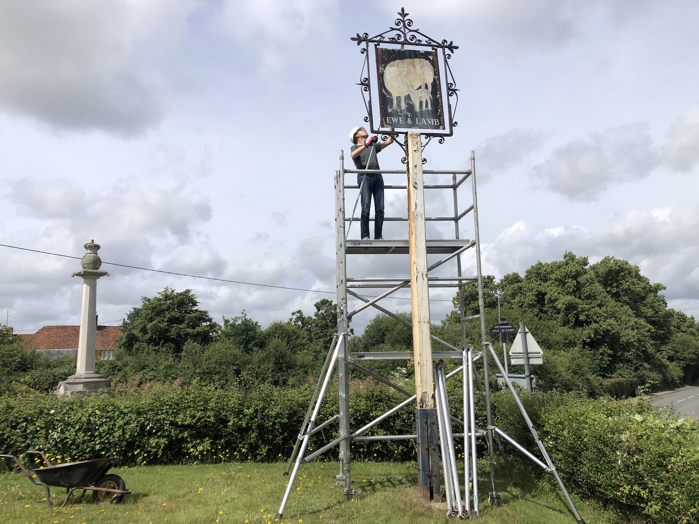
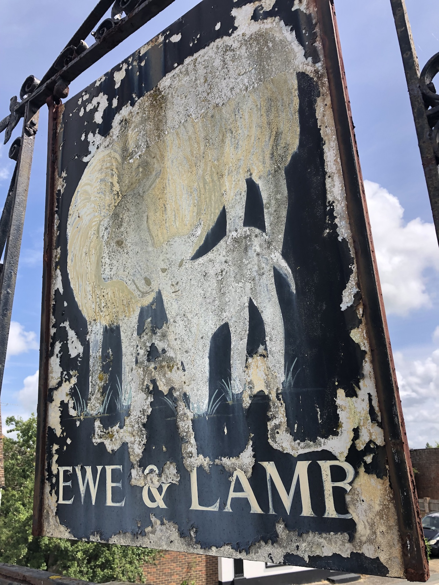

Refurbishing our village landmark.
The old pub sign was delapidated and becoming dangerous. As an important landmark in the village it seemed right to repair and gently restore it.

Taking it down.

The much loved image was fading away..